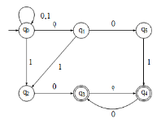
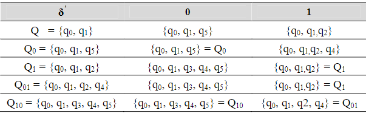
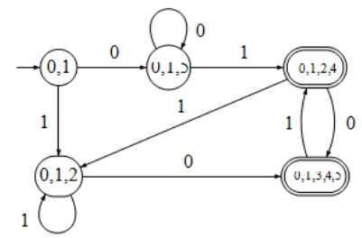

Sekilas tentang Finite Automata
Finite automata adalah model matematika sistem dengan masukan dan keluaran diskrit. Sistem dapat berada di salah satu dari sejumlah berhingga konfigurasi internal disebut state. State merupakan ringkasan informasi yang berkaitan dengan masukan-masukan sebelumnya yang diperlukan untuk menentukan pelaku sistem pada masukan-masukan berikutnya.
Finite Automata memiliki jumlah state yang banyaknya berhingga dan dapat berpindah-pindah dari suate state ke state yang lainnya. Finite Automata dibagi menjadi Deterministic Finite Automata (DFA) dan Non Deterministic Finite Automata (NFA).
Transformasi NFA - DFA (Subset Construction)
Walaupun lebih mudah untuk dibangun, suatu NFA hanyalah mesin ideal yang tidak dapat dengan efisien diimplementasikan dalam kehidupan nyata karena mesin yang sesungguhnya hanya dapat mengikuti satu jalur komputasi pada saat yang bersamaan (Du dan Ko, 2001). Untuk itu diperlukan suatu prosedur yang dapat melakukan transformasi dari suatu NFA menjadi DFA yang ekuivalen dengan bahasa yang diterima NFA tersebut. Transformasi suatu NFA menjadi DFA dilakukan dengan melakukan simulasi semua jalur transisi yang mungkin pada NFA.
Suatu NFA memiliki n buah state maka DFA yang ekuivalen dengan NFA tersebut akan memiliki 2n state dengan state awal pada DFA tersebut merupakan subset {q0} dengan demikian, transformasi dari NFA menjadi DFA meliputi pencarian semua subset yang mungkin dari himpunan state dari NFA. (Kakde, 2002).
Ide dasar dari subset construction adalah bahwa masing-masing state pada DFA yang terbentuk berkorespondensi dengan himpunan state pada NFA. Terdapat kemungkinan bahwa jumlah state pada DFA yang terbentuk dari hasil subset construction adalah berjumlah eksponensial dari jumlah state dari NFA.
Contoh :
Diketahui suatu NFA M = (Q, {0,1}, δ, q0, F) dan diberikan Q = {q0, q1, q2, q3, q4, q5}, F = {q3, q4} dan
tabel
transisi
Lihat Gambar dibawah (3 NFA Masukan Subset Construction) untuk mengetahui digram transisi NFA. akan dibentuk DFA M′yang ekuivalen dengan NFA M.

Solusi :
dapat dibentuk DFA M' dengan cara :
-
Buat Q = − closure({q0}) sebagai initial state dan F' = ⊘ menjadi himpunan final state.
Buat Q' ={Q}.
Jika Q ∩ F = ⊘ kemudian tambahkan Q dalam F'. - Ulangi langkah tersebut sampai ε'(Qx, a) didefinisikan untuk semua Qxε Q' dan semua a ε {0, 1}
a. Pilih Qx Q' dan a ε {0, 1} sedemikian hingga δ'(Qx, a) belum didefinisikan.
b. Buat Qxa = δ(Qx, a)
c. Jika Qxa ε Q' tambahkan Qxa ke Q' dan tambahkan juga pada F' jika Qxa ∩ F = ⊘
Semua proses tersebut dapat dilihat pada tabel transisi
Perlu dicatat bahwa pada langkah 2 tidak perlu mempertimbangkan states Q00, Q000, Q001 dan yang lainnya karena Q00 = Q0, Q000 = Q00 = Q0 dan Q001 = Q01, dengan cara yang hampir sama dapat diperoleh Q11 = Q1 tidak perlu memperhitungkan Q11W untuk sebarang W ϵ {0, 1}*. Transisi diagram dari DFA M ′ ditunjukkan pada Gambar dibawah (DFA Hasil Subset Construction yang Ekuivalen).
